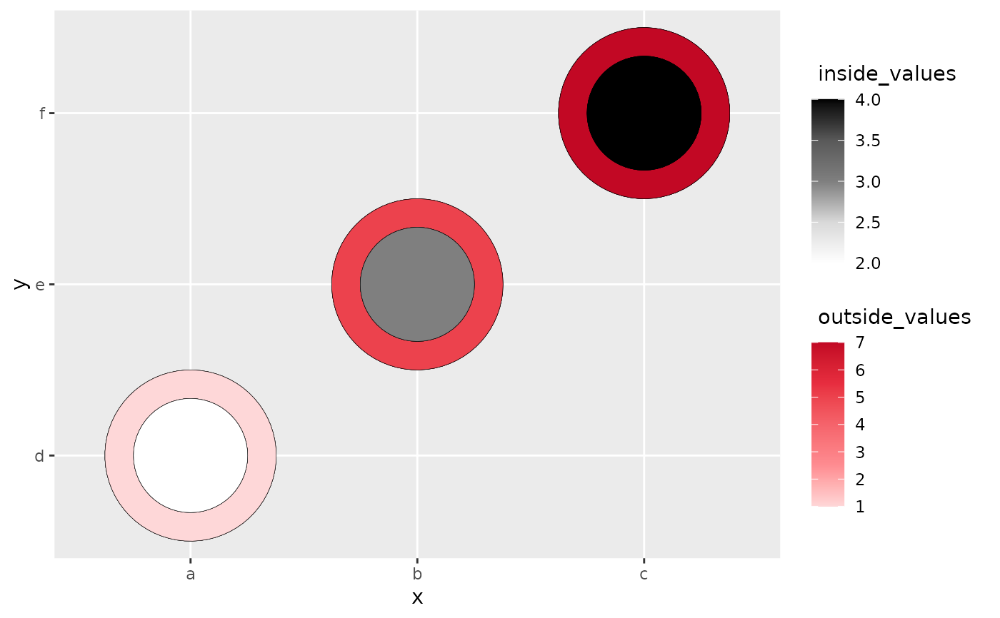
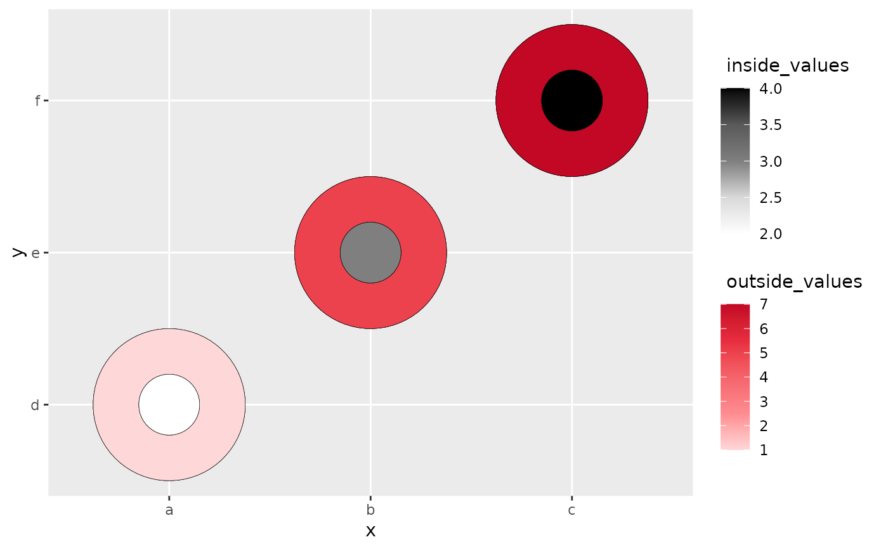
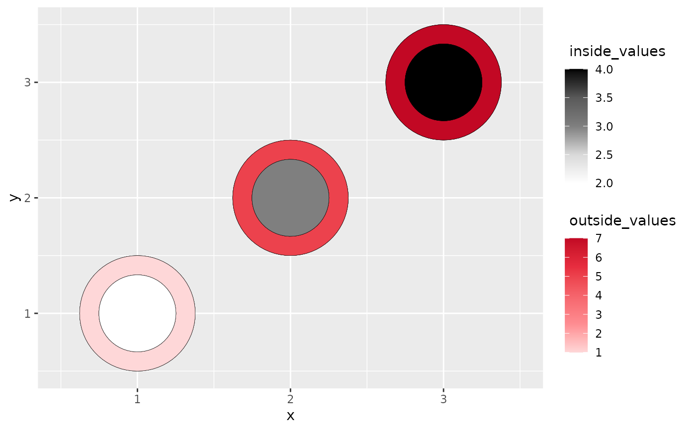
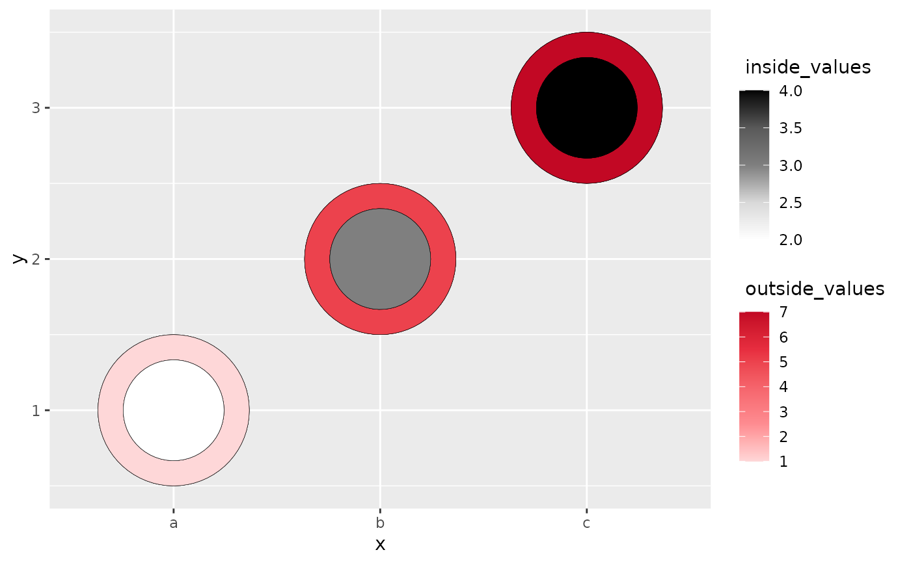

The heatcircle geom is used to create the two concentric circles that use luminance to show the values from two sources on the same plot.
Arguments
- outside
The column name for the outside portion of heatcircle.
- outside_name
The label name (in quotes) for the legend of the outside rendering. Default is
NULL.- outside_colors
A color vector, usually as hex codes.
- inside
The column name for the inside portion of heatcircle.
- inside_name
The label name (in quotes) for the legend of the inside rendering. Default is
NULL.- inside_colors
A color vector, usually as hex codes.
- r
The value that controls how large of the inside portion with respect to the outside one. When
ris larger, the inside get smaller. Default value is 3.- ...
...accepts any argumentsscale_fill_gradientn()has .
Examples
# heatcircle with categorical variables only
library(ggplot2)
data <- data.frame(x = rep(c("a", "b", "c"), 3),
y = rep(c("d", "e", "f"), 3),
outside_values = rep(c(1,5,7),3),
inside_values = rep(c(2,3,4),3))
ggplot(data, aes(x,y)) +
geom_heat_circle(outside = outside_values,
inside = inside_values)

# Making the inside smaller by setting r to be larger.
ggplot(data, aes(x,y)) +
geom_heat_circle(outside = outside_values,
inside = inside_values,
r = 5)

# heatcircle with numeric variables only
data <- data.frame(x = rep(c(1, 2, 3), 3),
y = rep(c(1, 2, 3), 3),
outside_values = rep(c(1,5,7),3),
inside_values = rep(c(2,3,4),3))
ggplot(data, aes(x,y)) +
geom_heat_circle(outside = outside_values,
inside = inside_values)

# heatcircle with a mixture of numeric and categorical variables
data <- data.frame(x = rep(c("a", "b", "c"), 3),
y = rep(c(1, 2, 3), 3),
outside_values = rep(c(1,5,7),3),
inside_values = rep(c(2,3,4),3))
ggplot(data, aes(x,y)) +
geom_heat_circle(outside = outside_values,
inside = inside_values)
